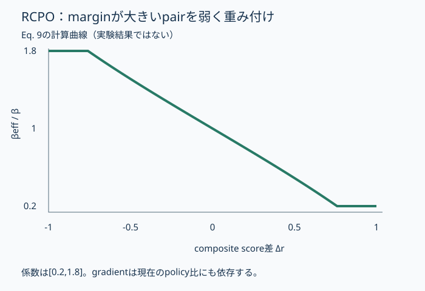

概要
「恋人への贈り物」には口紅とネックレスの両方が適する。商品contentの類似性だけで住所を作ると、このquery共通性を失う。ICEGRはco-clickと過去queryをSIDへ入れ、少数露出商品にも合成queryを与え、選好学習でも関連性を守る。Baiduの0.5Bモデルのオンライン成績は有望だが、改善の主因をtokenizerだけに帰さない。
問題設定
SID構築は商品説明、SFTはitem→SIDの暗記、選好最適化は人気や売上、と別々の信号を使うとquery意図が途中で薄れる。real query→SIDだけでは露出の少ない商品に教師が不足する。click graphも露出の影響を含み、未露出商品の正しい需要を直接知っているわけではない。
VARGとICEGRでは生成結果の受け渡し先が違う
| 条件 | IDの軸 | 教師 | 本番の接続 |
|---|---|---|---|
| VARG | 意味prefix + 価値rank | 3-stage SFT + Prefix-GRPO | 既存final rankerへ予約枠 |
| ICEGR | query intent + RQ-KMeans | synthetic/real SFT + RCPO | 一部top-kを最終表示へ |
列が収まらない場合は、表を横にスクロールできます。
核心
著者の主張 · 論文に書かれていること
商品contentだけのSID、低露出商品のquery不足、business preferenceによる意図の逸脱を、IA-SID・SQE-SFT・RCPOの3段階で抑える。
解釈・批評 · 読書メモ
VARGは価値順の第3 tokenとranker報酬、ICEGRは全学習段階でquery意図を守る。どちらも関連性と価値を扱うが、ICEGRの一部結果は最終表示へ直接入り、VARGはfinal rankerへ渡す。同じEC検索でも責任範囲とcontrolが異なり、GMVの倍率では優劣を決められない。
モデル / 手法
量子化前に検索で結ばれる商品を集める
8BのEC適応embedding modelでquery–product InfoNCEを学び、co-click graphを作る。edgeは同じqueryからのclick数の幾何平均を合計する。対称正規化した隣接行列で3回伝播し、各回0.2の元embeddingを混ぜる。
さらに各商品の歴史query embeddingをclick頻度で加重平均する。query数に基づくη=min(1,log(|Qᵢ|+1)/log(51))をかけてgraph表現へ加算し、L2正規化する。fusion λ=1、最終256次元。3層・各1,024 codeのRQ-KMeansでSIDを作る。VARGの第3 tokenの価値順とは異なり、3層とも残差量子化である。
商品の暗記課題をqueryの教師へ変換する
SQE-SFTはcatalogからSPU、brand、category、series、model、attributeを抽出する。商品名・category・variantを指定するqueryと、属性条件付きqueryを作り、正規化・dedup・validity filteringを行う。Stage 1 synthetic→SID、Stage 2 real→SIDの共通目的で学ぶ。低露出商品のquery教師を増やすことが狙いであり、実際にそのqueryでclickされた証拠を増やす操作ではない。
RCPOは関連性を守りながら比較の強さを変える
0.6B relevance modelのSRSと、click・purchase・GMVからcategory平均へ平滑化したSBPを用いる。SRAは関連性で選好方向を決め、BPRは関連性の近い候補間でbusiness順を決める。SRS/SBPを[0,1]へ揃えた等重み平均rからΔr=r⁺−r⁻を計算する。
βeffは大きい正marginほど小さくなる。既にoffline根拠が明白なpairへの重複した更新を弱め、僅差のpairを強くする設計である。ただしβはsigmoid内の係数なので、実際のgradientの大きさは現在のpolicy比にも依存する。正解SIDへのlength-normalized SFT項も残す。
backboneはoffline比較・onlineとも0.5B。1.5/3/7Bでも検討するが、本文で確認できるのはサイズであり、Qwenなどの固有model名を補わない。
RCPOのmargin係数を曲線で読む
{kind=link}

意図を表現へ入れる場所と、選好を制御する場所
- query共通edgewᵢⱼ = Σq √(nᵢq nⱼq)
同queryからのco-clickを使う。content類似度だけではない。
- 元表現へのanchorHᵗ = (1−αg) ÂHᵗ⁻¹ + αgX
αg=0.2、3 step。graphだけへ流れ切らない。
- margin係数βeff = β · clip(1 + log((2−Δr)/(2+Δr)), 0.2, 1.8)
Δrは正例・負例のcomposite score差。欠損時は倍率1。
- 選好lossL = −E[log σ(βeff Δθ) + ηsft log πθ(s⁺|q)/|s⁺|]
Δθはpolicy/referenceの正負log比差。
なぜ効きそうか
解釈・推論
解釈: co-click graphはcontentが違う補完候補を近付け、synthetic queryは商品暗記を検索文からのretrievalへ近付ける。関連性が十分な候補同士でbusiness preferenceを比較すれば、売上が高いだけの無関係商品へ流れにくい。一方、合成queryは実userの語彙分布とずれ、graphは人気偏りを増幅しうる。anchorとconfidence gateはこの依存を抑えるために読む。
根拠
一次資料 PDF §4、Tables 2–5 の著者報告。約3カ月の検索log、12.8M query・14.6M商品。最終日をtestとし、SID等もpre-testだけから構築。offlineは20,000 queryで比較する。
| 累積追加 | Recall@20 | NDCG@20 |
|---|---|---|
| ProdGR | 0.4247 | 0.2318 |
| +SQE-SFT | 0.4954 | 0.2784 |
| +IA-SID | 0.5006 | 0.2841 |
| +RCPO | 0.5169 | 0.2935 |
Recall@20 +21.7%、NDCG@20 +26.6%は相対差。累積追加順でSQE-SFTがRecall改善の76.7%を占める。これは順序に依存する分解で、各部品の独立寄与ではない。query–product alignmentをbase encoderへ戻すとRecall@20 0.4179、RCPOのβを固定するとNDCG@20が7.36%低下する。
オンラインは0.5B、2週間、live traffic 20%。既存MCAへICEGRを追加し、一部top-kを最終impression listへ直接挿入。残りは既存の関連性filter・rankへ回す。CTR +3.52%、Order Volume +15.96%、GMV +7.53%、Show PV +8.84%、Long-click Rate +5.27%、商品landing PV +8.75%。絶対Kや信頼区間は公開されていない。VARGのreserved final-ranker quotaと同一条件ではない。
大きい追加効果は合成queryの段階にある
| 条件 | Recall@20 | 前段からの差 pp |
|---|---|---|
| ProdGR | 42.47% | 基準 |
| +SQE-SFT | 49.54% | +7.07 |
| +IA-SID | 50.06% | +0.52 |
| +RCPO | 51.69% | +1.63 |
列が収まらない場合は、表を横にスクロールできます。
実行可能な理解
uv run papers/icegr-baidu-intent-generative-retrieval/run.py。口紅・ネックレス・修理の人工embeddingで、query共通edgeの3-step伝播とanchorを計算する。businessだけの選択と簡易relevance gateを比べ、Eq. 9のmarginごとの係数も計算する。
実行コードと補助ファイル（plot.py）を同じフォルダーへ保存して実行してください。
結果
人工3商品。Eq. 3と9の算術、関連性gateの意義を確認。ICEGRの学習・A/B再現ではない。
意図で結ぶ2商品の距離と関連性制約
| 指標 | before | after | business_only | relevance_gate |
|---|---|---|---|---|
| gift_pair_distance | 1.4142135623730951 | 0.4864894654563448 | ||
| chosen | repair | necklace |
生の results.json
{
"note": "人工3商品。Eq. 3と9の算術、関連性gateの意義を確認。ICEGRの学習・A/B再現ではない。",
"scope": {
"calibration_monotonicity": "CONFIRMED",
"mechanism": "PARTIAL",
"performance": "NOT TESTED",
"scaling": "NOT TESTED",
"production_applicability": "NOT TESTED"
},
"embeddings": {
"content": [
[
1.0,
0.0
],
[
0.0,
1.0
],
[
-1.0,
0.0
]
],
"after_graph": [
[
0.32800000000000007,
0.6720000000000002
],
[
0.6720000000000002,
0.32800000000000007
],
[
-0.2,
0.0
]
]
},
"calibration": [
{
"margin": -1,
"factor": 1.8
},
{
"margin": -0.5,
"factor": 1.5108256237659907
},
{
"margin": 0,
"factor": 1.0
},
{
"margin": 0.5,
"factor": 0.4891743762340093
},
{
"margin": 1,
"factor": 0.2
}
],
"experiments": [
{
"name": "意図で結ぶ2商品の距離と関連性制約",
"metrics": {
"gift_pair_distance": {
"before": 1.4142135623730951,
"after": 0.4864894654563448
},
"chosen": {
"business_only": "repair",
"relevance_gate": "necklace"
}
}
}
]
}人工の贈り物pairの距離は√2から約0.486へ縮む。businessだけなら無関連のrepair、関連性0.8以上の簡易gateではnecklaceを選ぶ。margin −1/0/+1でβ倍率は1.8/1/0.2となる。この選択gateはSRA/BPRを説明する代理で、公式pair構築そのものではない。
検証できたこと
Mechanism PARTIAL。Eq. 3のanchor付き伝播、anchor=1で元表現を保持する端点、Eq. 9の係数範囲とmarginに対する単調減少はCONFIRMED。
検証していないこと
Performance / Scaling / Production applicability NOT TESTED。8B embedding・0.5B retrieval・0.6B relevance modelの学習、合成queryの品質、RQ-KMeans、DPO収束、Baidu A/Bは未実行。本文はmodelサイズを示すが、base checkpointの名前までは確認できないため推測しない。
実装
propagate()は正規化隣接行列とEq. 3、beta_factor()はEq. 9。候補gateの閾値0.8は人工例の設定で、公式hyperparameterではない。公式の量子化・pair sampling・SFTを省略した境界を明示する。
原論文・公式コード対応
Original Paper / Official Code Mapping
一次資料: ICEGR: An Intent-Coherent End-to-End Generative Retrieval Framework for E-commerce Search、arXiv v1。2026-09-22確認。PDF SHA-256: b58ae102b84c0215671d3b02b33c904aebb99fe270ff48c5fc5e48d35d95cdd3。取得済みPDFは /tmp/research-2026-09-22/2608.29652v1.pdf を再利用した。
| 原典 | Lab | 省略 |
|---|---|---|
| Eqs. 2–3 | propagate | click log、8B encoder |
| Eqs. 4–8 | method | fusion・量子化・合成query生成 |
| Eq. 9 | beta_factor | DPO optimizer・reference policy |
| §3.3 SRA/BPR | relevance gateの人工例 | 正式pair選定規則の全再現 |
| Tables 2,5 | Evidence | neural学習・A/B再現なし |
公式コード: 確認したPDFに本手法の公開実装へのリンクは見つからなかった。公開の有無を網羅的に保証するものではない。